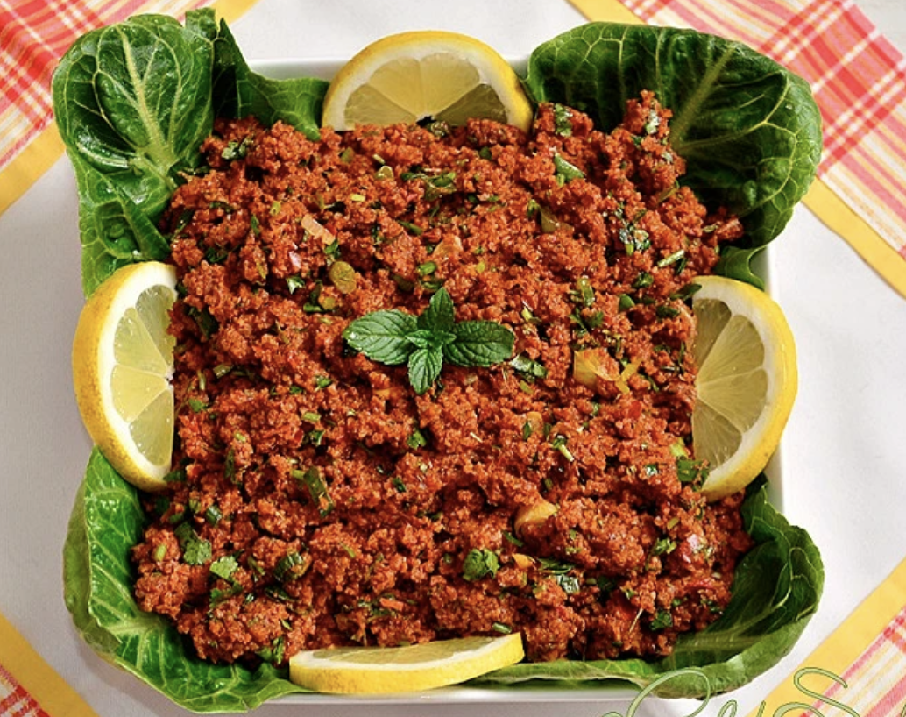
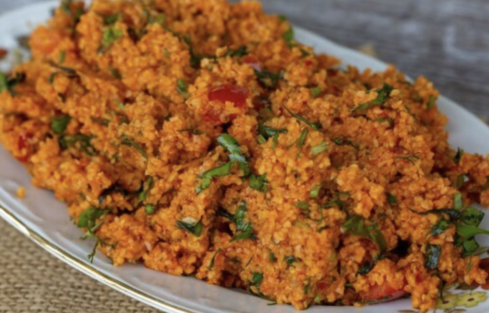
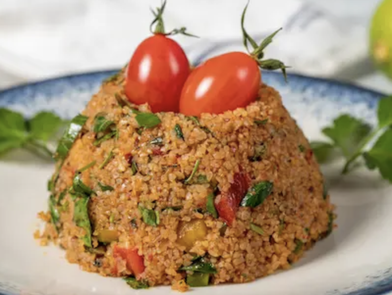

kısır TARİFİ



kısır Tarifi İçin Malzemeler
- 6 çay bardağı kısırlık bulgur (köftelik bulgur)
- 5 su bardağı sıcak su
- 1 yemek kaşığı tepeleme biber salçası
- 1 yemek kaşığı domates salçası
- Domates (yaz domatesi küçük küçük doğranarak eklenebilir, kışın yerine domates salçası ekliyoruz)
- 1 demet maydanoz
- 6 dal yeşil soğan
- 6-7 yaprak taze nane
- 7-8 yaprak marul
- 1 tatlı kaşığı karabiber
- 1 tatlı kaşığı tuz
- 1 çay kaşığı kimyon (isteğe bağlı)
- 1 limon suyu
- Yarım çay bardağı nar ekşisi
- Yarım çay bardağı zeytinyağı
yapılışı:
- 6 çay bardağı kısırlık bulgur derince bir kaba alınır.
- Üzerine 1 tepeleme yemek kaşığı biber salçası eklenerek kaşığın arkasıyla salça bulgura yedirilir. 1 yemek kaşığı domates salçası eklenerek aynı şekilde karıştırılır. Dilerseniz salçaları aynı anda ekleyip yedirebilirsiniz.
- Üzerine 5 su bardağı kadar sıcak su dökülerek üzerine kapak kapatılır ve yumuşamaya bırakılır.
- Bu arada yeşillikler doğranır. Suyu çekip yumuşayan bulgura doğradığımız maydanoz, yeşil soğan, taze nane ve marul eklenir.
- Yazın küçük küçük doğrayarak domates de ekleyebilirsiniz.
- Kısırı karıştırdıktan sonra 1 tatlı kaşığı karabiber, 1 tatlı kaşığı tuz, yarım çay bardağı nar ekşisi, 1 limon suyu, varsa biraz kimyon eklenebilir, yarım çay bardağı zeytinyağını da eklenerek iyice karıştırılır.
- Kısır servis tabağına alınır. İsteğe göre turşu, salatalık, domates ile süsleyebilirsiniz. Afiyet olsun.